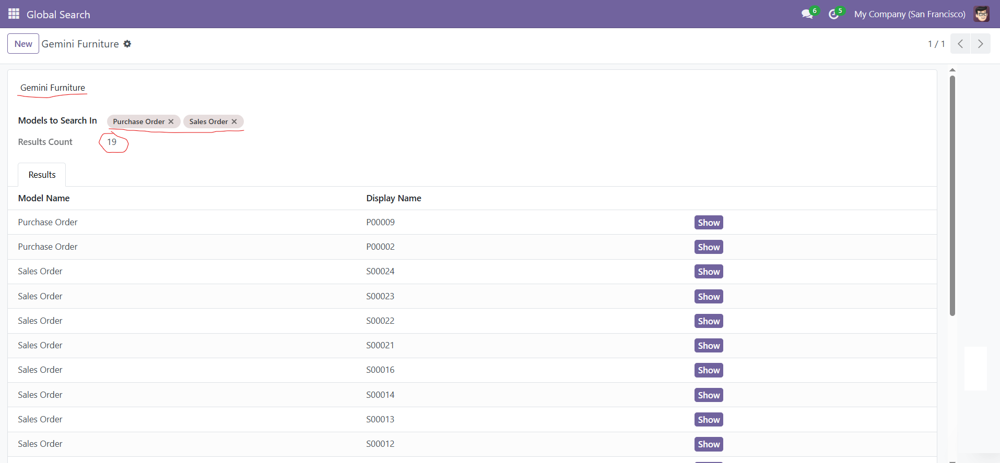

🔍 Global Search for Odoo
Global Search is a powerful productivity module that allows users to perform advanced keyword-based searches across multiple Odoo models — all in one place. Whether you're looking for customers, products, orders, or any other record, this tool makes it fast and easy to find what you need.
🚀 Save time and improve your workflow with a single global search interface across all business models!
✨ Key Features
- Search across all
Char, Text, and Many2one.name fields
- Select specific models to include in the search
- Exclude system and technical models automatically
- Display results as a dynamic and editable list
- Click "Show" to open any record directly
- Result count computed automatically
- Fully integrated with Odoo UI (no external setup required)
🧠 Use Cases
- Quickly find any record using a keyword — without knowing the model name
- Search in large Odoo databases across multiple apps
- Perfect for support teams, power users, and administrators
🛠️ Technical Details
- Built using
TransientModel for temporary data handling
- Does not persist any data in the database
- Fully secure — only shows data from models the user has access to
- Clean UI with dynamic field rendering
- No impact on performance — searches only when triggered
📦 Installation
- Download and unzip the module into your Odoo
addons directory
- Update the app list in Odoo
- Search for "Global Search" in the Apps menu and install it
✅ Compatibility
- Odoo 18.0
- Community & Enterprise editions
🧑💼 Support & Customization
Need help or want to customize this module for your workflow?
Contact us at: imazighenapps@gmail.com Support
📸 Screenshots

💡 Why Choose This Module?
- Improve team productivity
- Reduce time spent navigating multiple menus
- Powerful search logic with zero coding needed